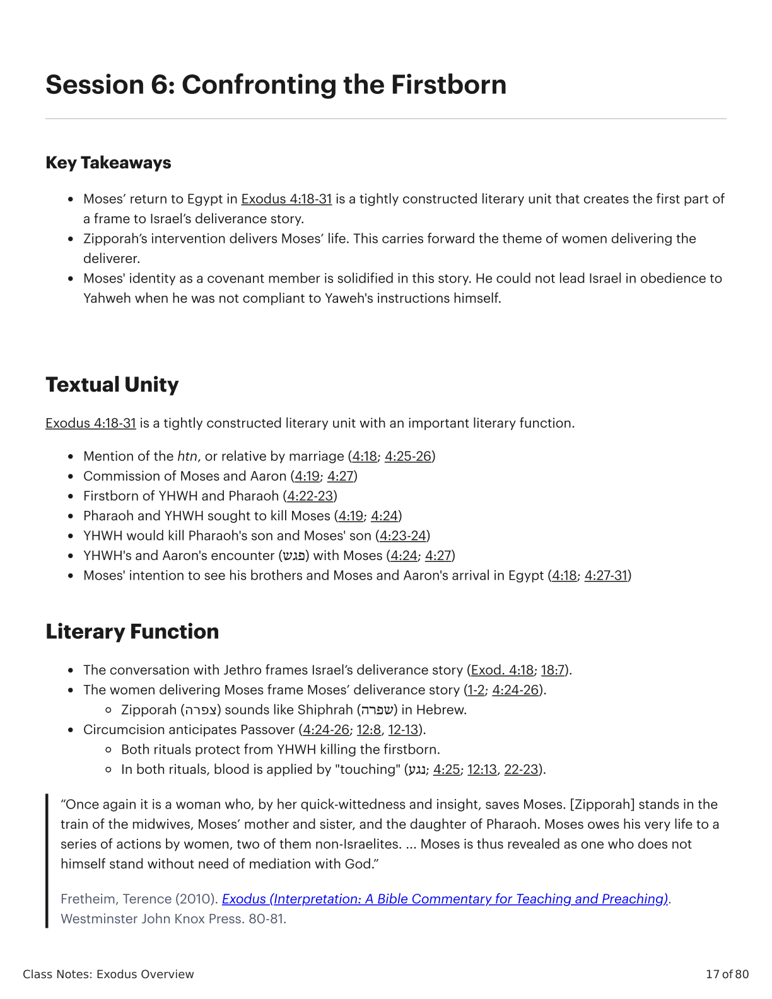
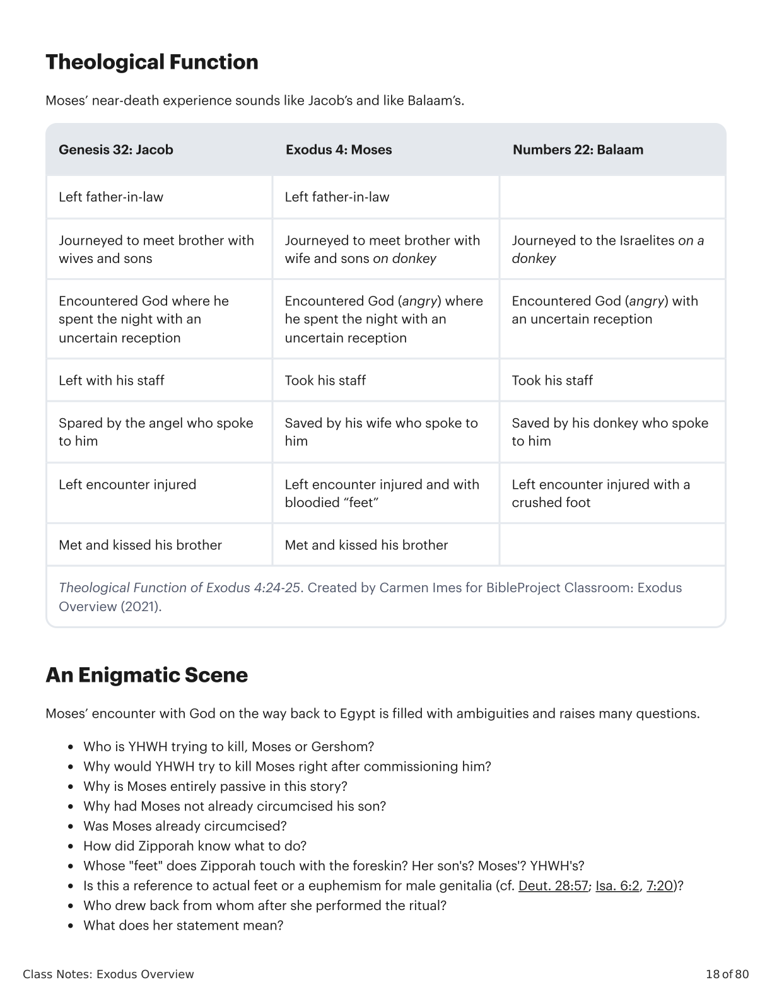

Sessão 6: Class Notes: Exodus OverviewSession 6: Class Notes: Exodus Overview
\n
\n
Class Notes: Exodus Overview
17 of 80
Session 6: Confronting the Firstborn
Key Takeaways
Moses’ return to Egypt in Exodus 4:18-31 is a tightly constructed literary unit that creates the first part of
a frame to Israel’s deliverance story.
Zipporah’s intervention delivers Moses’ life. This carries forward the theme of women delivering the
deliverer.
Moses' identity as a covenant member is solidified in this story. He could not lead Israel in obedience to
Yahweh when he was not compliant to Yaweh's instructions himself.
Textual Unity
Exodus 4:18-31 is a tightly constructed literary unit with an important literary function.
Mention of the htn, or relative by marriage (4:18; 4:25-26)
Commission of Moses and Aaron (4:19; 4:27)
Firstborn of YHWH and Pharaoh (4:22-23)
Pharaoh and YHWH sought to kill Moses (4:19; 4:24)
YHWH would kill Pharaoh's son and Moses' son (4:23-24)
YHWH's and Aaron's encounter (פגש) with Moses (4:24; 4:27)
Moses' intention to see his brothers and Moses and Aaron's arrival in Egypt (4:18; 4:27-31)
Literary Function
The conversation with Jethro frames Israel’s deliverance story (Exod. 4:18; 18:7).
The women delivering Moses frame Moses’ deliverance story (1-2; 4:24-26).
Zipporah (צפרה) sounds like Shiphrah (שפרה) in Hebrew.
Circumcision anticipates Passover (4:24-26; 12:8, 12-13).
Both rituals protect from YHWH killing the firstborn.
In both rituals, blood is applied by "touching" (נגע; 4:25; 12:13, 22-23).
“Once again it is a woman who, by her quick-wittedness and insight, saves Moses. [Zipporah] stands in the
train of the midwives, Moses’ mother and sister, and the daughter of Pharaoh. Moses owes his very life to a
series of actions by women, two of them non-Israelites. ... Moses is thus revealed as one who does not
himself stand without need of mediation with God.”
Fretheim, Terence (2010). Exodus (Interpretation: A Bible Commentary for Teaching and Preaching).
Westminster John Knox Press. 80-81.
\n

Êxodo X:Y. Tradução e Design Literário por Tim Mackie para BibleProject Classroom: José (2021).Exodus X:Y. Translation and Literary Design by Tim Mackie for BibleProject Classroom: Joseph (2021).
\n
Class Notes: Exodus Overview
18 of 80
Theological Function
Moses’ near-death experience sounds like Jacob’s and like Balaam’s.
Genesis 32: Jacob
Exodus 4: Moses
Numbers 22: Balaam
Left father-in-law
Left father-in-law
Journeyed to meet brother with
wives and sons
Journeyed to meet brother with
wife and sons on donkey
Journeyed to the Israelites on a
donkey
Encountered God where he
spent the night with an
uncertain reception
Encountered God (angry) where
he spent the night with an
uncertain reception
Encountered God (angry) with
an uncertain reception
Left with his staff
Took his staff
Took his staff
Spared by the angel who spoke
to him
Saved by his wife who spoke to
him
Saved by his donkey who spoke
to him
Left encounter injured
Left encounter injured and with
bloodied “feet”
Left encounter injured with a
crushed foot
Met and kissed his brother
Met and kissed his brother
Theological Function of Exodus 4:24-25. Created by Carmen Imes for BibleProject Classroom: Exodus
Overview (2021).
An Enigmatic Scene
Moses’ encounter with God on the way back to Egypt is filled with ambiguities and raises many questions.
Who is YHWH trying to kill, Moses or Gershom?
Why would YHWH try to kill Moses right after commissioning him?
Why is Moses entirely passive in this story?
Why had Moses not already circumcised his son?
Was Moses already circumcised?
How did Zipporah know what to do?
Whose "feet" does Zipporah touch with the foreskin? Her son's? Moses'? YHWH's?
Is this a reference to actual feet or a euphemism for male genitalia (cf. Deut. 28:57; Isa. 6:2, 7:20)?
Who drew back from whom after she performed the ritual?
What does her statement mean?
\n

Êxodo X:Y. Tradução e Design Literário por Tim Mackie para BibleProject Classroom: José (2021).Exodus X:Y. Translation and Literary Design by Tim Mackie for BibleProject Classroom: Joseph (2021).
\n
Class Notes: Exodus Overview
19 of 80
Unlocking the Enigma
Zipporah’s statement: “you are a blood relative” (חתן־דמים אתה לי) uses the same root ḥtn that means “father-
in-law” in 4:18. The basic meaning is kinship by marriage. In his article, “’Lest Ye Perish in the Way’: Ritual and
Kinship in Exodus 4:24-26,” Christopher Hays argues, “through this ritual, Zipporah claims her family’s
relationship to the Divine Kinsman, YHWH” (Hays, 2017).
No matter who Zipporah circumcised, whose “feet” she touched, and to whom she spoke, her ritual action
and statement resolved the uncertainty of their covenant status. YHWH announced his intention to kill the
firstborn of Egypt; now Moses’ family is fully identified with the descendants of Abraham.
Circumcision
Circumcision is the incision or complete removal of the foreskin, and in the Bible it is the sign of God’s
covenant with Abraham (Gen. 17:9-14). Other cultures practiced circumcision at puberty or marriage, but the
Israelites performed it on the eighth day after birth for every male community member, even foreigners (
Exod. 12:48).
Circumcision was not practiced on the wilderness generation (see Josh. 5:5)! God’s people had failed to
circumcise their sons on the way and died in the wilderness. Joshua rectified their oversight by acting as
Zipporah had done, circumcising the “sons of Israel” with flint knives to ensure their covenant status.
Reflection Question
Do you still have any questions about the enigmatic scene in Exodus 4:24-25?
\n
Class Notes: Exodus Overview
20 of 80
Module 2: Exodus from Egypt
SESSIONS 7-14
Walk scene-by-scene through the dramatic confrontation between Yahweh and
Pharaoh. Reflect on how God’s justice and mercy work together through these
challenging passages containing the 10 plagues.
\n